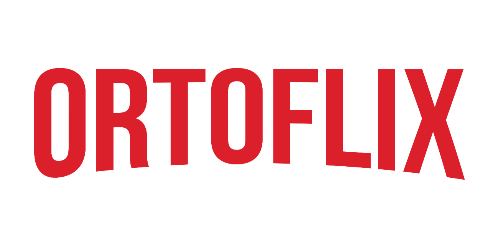

<!DOCTYPE html>
<html lang="pt-BR">
<head>
<meta charset="UTF-8" />
<meta name="viewport" content="width=device-width, initial-scale=1, maximum-scale=1, viewport-fit=cover" />
<title>FisioLab — Prof. Felipe Cerqueira</title>
<meta name="description" content="FisioLab — ambiente de estudo e simulação para disciplinas de fisioterapia. Prof. Felipe Cerqueira." />
<meta name="theme-color" content="#22C55E" />
<link rel="manifest" href="manifest.json" />
<link rel="apple-touch-icon" href="apple-touch-icon.png" />
<link rel="icon" href="icon-192.png" />
<meta name="apple-mobile-web-app-capable" content="yes" />
<meta name="apple-mobile-web-app-status-bar-style" content="black-translucent" />
<meta name="apple-mobile-web-app-title" content="FisioLab" />

<script src="https://cdn.tailwindcss.com"></script>
<script crossorigin src="https://unpkg.com/react@18/umd/react.production.min.js"></script>
<script crossorigin src="https://unpkg.com/react-dom@18/umd/react-dom.production.min.js"></script>
<script src="https://unpkg.com/@babel/standalone/babel.min.js"></script>

<style>
  @import url('https://fonts.googleapis.com/css2?family=Poppins:wght@800;900&family=Inter:wght@400;500;600;700&family=Oswald:wght@500;600;700&family=IBM+Plex+Sans:wght@400;500;600&family=IBM+Plex+Mono:wght@400;500;600&family=Fraunces:opsz,wght@9..144,400;9..144,600;9..144,700&display=swap');
  body { margin: 0; background: #F5F5F7; font-family: -apple-system, BlinkMacSystemFont, 'Inter', 'Segoe UI', sans-serif; }
  .font-display { font-family: 'Oswald', sans-serif; letter-spacing: 0.02em; }
  .font-mono { font-family: 'IBM Plex Mono', monospace; }
</style>
</head>
<body>
<div id="root"></div>

<script type="text/babel" data-presets="react">
const { useState, useRef, useEffect } = React;

/* =========================================================================
   Design: painel de aparelho de eletroestimulação — tela tipo osciloscópio
   com traço fósforo verde, chassi escuro, leitura em LCD mono.

   Estrutura alinhada ao slide "Podem ser classificadas": tipo de corrente,
   polaridade (resultante — polarizada/despolarizada), número de fases e
   formato de onda são tratados como eixos que se combinam, não um menu único.
   ========================================================================= */

const TIPOS = [
  { id: "cc", label: "Corrente Contínua (CC)" },
  { id: "ca", label: "Corrente Alternada (CA)" },
  { id: "pulsada", label: "Corrente Pulsada" },
];

const FORMATOS = [
  { id: "quadrada", label: "Quadrada" },
  { id: "triangular", label: "Triangular" },
  { id: "sinusoidal", label: "Sinusoidal" },
  { id: "trapezoidal", label: "Trapezoidal" },
];

function clinicalNote(tipo, numFases, simetria) {
  if (tipo === "cc") return "Fluxo unidirecional constante. Base da iontoforese e de efeitos polares (atração/repulsão iônica sob os eletrodos). Sempre polarizada.";
  if (tipo === "ca") return "Corrente sinusoidal bidirecional, sem componente polar líquido. Sempre despolarizada — não gera efeitos químicos cumulativos sob os eletrodos.";
  if (tipo === "pulsada" && numFases === "mono") return "Pulsos unidirecionais, com período de repouso entre eles. Sempre polarizada — requer atenção à carga acumulada por fase.";
  if (tipo === "pulsada" && numFases === "bi" && simetria === "simetrica") return "Cada fase é espelho da outra — carga líquida zero, despolarizada. Minimiza risco de irritação cutânea. Comum em TENS convencional.";
  if (tipo === "pulsada" && numFases === "bi" && simetria === "assimetrica") return "Fases com amplitude/duração diferentes, mas carga balanceada (mesma área sob a curva) — despolarizada. Comum em NMES para contração muscular.";
  return "";
}

function polaridadeResultante(tipo, numFases) {
  if (tipo === "cc") return "polarizada";
  if (tipo === "ca") return "despolarizada";
  if (tipo === "pulsada" && numFases === "mono") return "polarizada";
  return "despolarizada";
}

function SimuladorCorrentes({ onBack }) {
  const [tipo, setTipo] = useState("pulsada");
  const [numFases, setNumFases] = useState("bi");
  const [simetria, setSimetria] = useState("simetrica");
  const [formato, setFormato] = useState("quadrada");
  const [polo, setPolo] = useState(1);

  const [frequency, setFrequency] = useState(50);
  const [pulseWidth, setPulseWidth] = useState(10);
  const [phase2Width, setPhase2Width] = useState(20);
  const [intensity, setIntensity] = useState(20);
  const [showInfo, setShowInfo] = useState(false);
  const [presentMode, setPresentMode] = useState(false);
  const [controlsOpen, setControlsOpen] = useState(false);

  const canvasRef = useRef(null);

  const WINDOW_MS = 1000;
  const MAX_MA = 100;

  const showFases = tipo === "pulsada";
  const showSimetria = tipo === "pulsada" && numFases === "bi";
  const showFormato = tipo === "pulsada";
  const showPolo = tipo === "cc";
  const showFrequency = tipo !== "cc";
  const showPulseWidth = tipo === "pulsada";
  const showPhase2 = tipo === "pulsada" && numFases === "bi" && simetria === "assimetrica";

  const polaridade = polaridadeResultante(tipo, numFases);

  function addPhase(pts, tStart, durationMs, amplitude, shape) {
    const push = (t, y) => pts.push({ t, y });
    if (durationMs <= 0) return;
    if (shape === "quadrada") {
      push(tStart, 0);
      push(tStart, amplitude);
      push(tStart + durationMs, amplitude);
      push(tStart + durationMs, 0);
    } else if (shape === "triangular") {
      push(tStart, 0);
      push(tStart + durationMs / 2, amplitude);
      push(tStart + durationMs, 0);
    } else if (shape === "trapezoidal") {
      const rise = durationMs * 0.25;
      push(tStart, 0);
      push(tStart + rise, amplitude);
      push(tStart + durationMs - rise, amplitude);
      push(tStart + durationMs, 0);
    } else if (shape === "sinusoidal") {
      const steps = 12;
      for (let i = 0; i <= steps; i++) {
        const t = tStart + (durationMs * i) / steps;
        const y = amplitude * Math.sin((Math.PI * i) / steps);
        push(t, y);
      }
    }
  }

  function buildPoints() {
    const pts = [];
    const push = (t, y) => pts.push({ t, y });

    if (tipo === "cc") {
      push(0, intensity * polo);
      push(WINDOW_MS, intensity * polo);
      return pts;
    }

    if (tipo === "ca") {
      const steps = 600;
      for (let i = 0; i <= steps; i++) {
        const t = (WINDOW_MS * i) / steps;
        const y = intensity * Math.sin((2 * Math.PI * frequency * t) / 1000);
        push(t, y);
      }
      return pts;
    }

    const period = 1000 / frequency;
    const pw1 = pulseWidth;
    const pw2 = phase2Width;
    const amp2 =
      numFases === "bi"
        ? simetria === "simetrica"
          ? intensity
          : (intensity * pulseWidth) / Math.max(phase2Width, 1)
        : 0;

    let t = 0;
    push(0, 0);
    while (t < WINDOW_MS) {
      addPhase(pts, t, pw1, intensity, formato);
      let cursor = t + pw1;
      if (numFases === "bi") {
        const dur2 = simetria === "simetrica" ? pw1 : pw2;
        addPhase(pts, cursor, dur2, -amp2, formato);
        cursor += dur2;
      }
      push(Math.min(cursor, WINDOW_MS), 0);
      t = Math.max(t + period, cursor);
      push(Math.min(t, WINDOW_MS), 0);
    }
    return pts;
  }

  useEffect(() => {
    const canvas = canvasRef.current;
    if (!canvas) return;
    const ctx = canvas.getContext("2d");
    const W = canvas.width;
    const H = canvas.height;
    const padL = 58, padR = 16, padT = 16, padB = 28;
    const plotW = W - padL - padR;
    const plotH = H - padT - padB;

    ctx.clearRect(0, 0, W, H);
    ctx.fillStyle = "#07130D";
    ctx.fillRect(0, 0, W, H);

    const yZero = padT + plotH / 2;
    const xScale = plotW / WINDOW_MS;
    const yScale = (plotH / 2) / MAX_MA;

    ctx.strokeStyle = "rgba(74,255,140,0.14)";
    ctx.lineWidth = 1;
    const gridLinesX = 10;
    for (let i = 0; i <= gridLinesX; i++) {
      const x = padL + (plotW * i) / gridLinesX;
      ctx.beginPath();
      ctx.moveTo(x, padT);
      ctx.lineTo(x, padT + plotH);
      ctx.stroke();
    }
    const gridLinesY = 4;
    for (let i = 0; i <= gridLinesY; i++) {
      const y = padT + (plotH * i) / gridLinesY;
      ctx.beginPath();
      ctx.moveTo(padL, y);
      ctx.lineTo(padL + plotW, y);
      ctx.stroke();
    }

    ctx.strokeStyle = "rgba(74,255,140,0.35)";
    ctx.beginPath();
    ctx.moveTo(padL, yZero);
    ctx.lineTo(padL + plotW, yZero);
    ctx.stroke();

    ctx.fillStyle = "#6FE3A3";
    ctx.font = "13px 'IBM Plex Mono', monospace";
    ctx.fillText(`+${MAX_MA} mA`, 4, padT + 8);
    ctx.fillText(`-${MAX_MA} mA`, 4, padT + plotH);
    ctx.fillText("0", 4, yZero + 3);
    ctx.fillText(`${WINDOW_MS} ms (1 s)`, padL + plotW - 62, padT + plotH + 18);
    ctx.fillText("0 ms", padL, padT + plotH + 18);

    const pts = buildPoints();
    ctx.strokeStyle = "#4AFF8C";
    ctx.lineWidth = 2;
    ctx.shadowColor = "#4AFF8C";
    ctx.shadowBlur = 6;
    ctx.beginPath();
    pts.forEach((p, i) => {
      const x = padL + p.t * xScale;
      const y = yZero - Math.max(-MAX_MA, Math.min(MAX_MA, p.y)) * yScale;
      if (i === 0) ctx.moveTo(x, y);
      else ctx.lineTo(x, y);
    });
    ctx.stroke();
    ctx.shadowBlur = 0;
  }, [tipo, numFases, simetria, formato, polo, frequency, pulseWidth, phase2Width, intensity, presentMode]);

  return (
    <div className="min-h-screen w-full" style={{ background: "#12161B", fontFamily: "'IBM Plex Sans', sans-serif" }}>
      <style>{`
        @import url('https://fonts.googleapis.com/css2?family=Oswald:wght@500;600;700&family=IBM+Plex+Sans:wght@400;500;600&family=IBM+Plex+Mono:wght@400;500;600&display=swap');
        .font-display { font-family: 'Oswald', sans-serif; letter-spacing: 0.02em; }
        .font-mono { font-family: 'IBM Plex Mono', monospace; }
        input[type="range"] {
          -webkit-appearance: none;
          height: 4px;
          border-radius: 2px;
          background: #3A4650;
        }
        input[type="range"]::-webkit-slider-thumb {
          -webkit-appearance: none;
          width: 16px; height: 16px; border-radius: 50%;
          background: #E8892C; border: 2px solid #FFDCB0; cursor: pointer;
          margin-top: -6px;
        }
        input[type="range"]::-moz-range-thumb {
          width: 16px; height: 16px; border-radius: 50%;
          background: #E8892C; border: 2px solid #FFDCB0; cursor: pointer;
        }
      `}</style>

      {!presentMode && (
        <div className="px-5 py-4 border-b flex items-center justify-between" style={{ borderColor: "#262D35", background: "#171B21" }}>
          <div>
            <h1 className="font-display text-2xl" style={{ color: "#F2EFE6" }}>
              SIMULADOR DE CORRENTES
            </h1>
            <p className="font-mono text-xs tracking-widest uppercase" style={{ color: "#E8892C" }}>
              by OrtoFlix
            </p>
          </div>
          {onBack && (
            <button
              onClick={onBack}
              className="font-mono text-xs px-3 py-1.5 rounded border whitespace-nowrap"
              style={{ color: "#8A94A0", borderColor: "#3A4650", background: "#0F1318" }}
            >
              ← FisioLab
            </button>
          )}
        </div>
      )}

      <div className={presentMode ? "p-3 flex flex-col gap-3" : "p-4 md:p-6 grid grid-cols-1 lg:grid-cols-[1fr_380px] gap-5 max-w-6xl mx-auto"}>
        <div className="rounded-lg p-3 md:p-4 sticky top-2 z-10 relative" style={{ background: "#171B21", border: "1px solid #262D35" }}>
          <button
            onClick={() => { setPresentMode((v) => !v); setControlsOpen(false); }}
            aria-label={presentMode ? "Sair do modo apresentação" : "Modo apresentação"}
            title={presentMode ? "Sair do modo apresentação" : "Modo apresentação"}
            className="absolute top-3 right-3 z-20 w-8 h-8 rounded flex items-center justify-center border"
            style={{ color: "#E8892C", borderColor: "#3A4650", background: "#0F1318" }}
          >
            {presentMode ? (
              <svg width="16" height="16" viewBox="0 0 24 24" fill="none" stroke="currentColor" strokeWidth="2">
                <path d="M9 3H5a2 2 0 0 0-2 2v4M15 3h4a2 2 0 0 1 2 2v4M9 21H5a2 2 0 0 1-2-2v-4M15 21h4a2 2 0 0 0 2-2v-4" />
              </svg>
            ) : (
              <svg width="16" height="16" viewBox="0 0 24 24" fill="none" stroke="currentColor" strokeWidth="2">
                <path d="M3 9V5a2 2 0 0 1 2-2h4M17 3h4a2 2 0 0 1 2 2v4M21 15v4a2 2 0 0 1-2 2h-4M7 21H3a2 2 0 0 1-2-2v-4" />
              </svg>
            )}
          </button>
          <div className="flex items-center justify-between mb-2 flex-wrap gap-2 pr-10">
            <p className="font-mono text-xs uppercase tracking-widest" style={{ color: "#6FE3A3" }}>
              Forma de onda
            </p>
            <p className="font-mono text-xs text-right" style={{ color: "#6FE3A3" }}>
              {TIPOS.find((t) => t.id === tipo)?.label}
              {showFases && (numFases === "mono" ? " · Monofásica" : ` · Bifásica ${simetria === "simetrica" ? "simétrica" : "assimétrica"}`)}
              {showFormato && ` · ${FORMATOS.find((f) => f.id === formato)?.label}`}
            </p>
          </div>
          <canvas
            ref={canvasRef}
            width={presentMode ? 1400 : 900}
            height={presentMode ? 560 : 360}
            className="w-full rounded"
            style={{ background: "#07130D", border: "1px solid #1E3428" }}
          />
          <div className="flex items-center gap-3 mt-4 flex-wrap">
            <span className="font-mono text-xs uppercase tracking-widest" style={{ color: "#8A94A0" }}>
              Existe carga líquida?
            </span>
            <button
              onClick={() => setShowInfo(true)}
              aria-label="Sobre esta forma de onda"
              className="w-5 h-5 rounded-full flex items-center justify-center font-mono text-xs"
              style={{ background: "#0F1318", color: "#6FE3A3", border: "1px solid #3A4650" }}
            >
              i
            </button>
            <div className="flex gap-2">
              <span
                className="font-mono text-xs px-3 py-1.5 rounded border"
                style={
                  polaridade === "polarizada"
                    ? { background: "#E8892C", color: "#171B21", borderColor: "#E8892C" }
                    : { background: "#0F1318", color: "#5A6570", borderColor: "#3A4650" }
                }
              >
                POLARIZADA
              </span>
              <span
                className="font-mono text-xs px-3 py-1.5 rounded border"
                style={
                  polaridade === "despolarizada"
                    ? { background: "#E8892C", color: "#171B21", borderColor: "#E8892C" }
                    : { background: "#0F1318", color: "#5A6570", borderColor: "#3A4650" }
                }
              >
                DESPOLARIZADA
              </span>
            </div>
          </div>
        </div>

        {showInfo && (
          <div className="fixed inset-0 z-50 flex items-center justify-center p-4" style={{ background: "rgba(7,19,13,0.75)" }} onClick={() => setShowInfo(false)}>
            <div
              className="max-w-sm w-full rounded-lg p-5"
              style={{ background: "#171B21", border: "1px solid #262D35" }}
              onClick={(e) => e.stopPropagation()}
            >
              <div className="flex items-center justify-between mb-3">
                <p className="font-mono text-xs uppercase tracking-widest" style={{ color: "#6FE3A3" }}>
                  Sobre esta forma de onda
                </p>
                <button
                  onClick={() => setShowInfo(false)}
                  className="font-mono text-xs px-2 py-1"
                  style={{ color: "#8A94A0" }}
                >
                  Fechar
                </button>
              </div>
              <p className="text-sm leading-relaxed" style={{ color: "#DCE1E5" }}>
                {clinicalNote(tipo, numFases, simetria)}
              </p>
            </div>
          </div>
        )}

        {(!presentMode || controlsOpen) && (
        <div className="rounded-lg p-4 space-y-4" style={{ background: "#171B21", border: "1px solid #262D35" }}>
          <div>
            <label className="font-mono text-xs uppercase tracking-widest block mb-1" style={{ color: "#8A94A0" }}>
              Tipo de corrente
            </label>
            <select
              value={tipo}
              onChange={(e) => setTipo(e.target.value)}
              className="w-full rounded px-3 py-2 text-sm"
              style={{ background: "#0F1318", color: "#F2EFE6", border: "1px solid #3A4650" }}
            >
              {TIPOS.map((t) => (
                <option key={t.id} value={t.id}>{t.label}</option>
              ))}
            </select>
          </div>

          {showFases && (
            <div>
              <label className="font-mono text-xs uppercase tracking-widest block mb-1" style={{ color: "#8A94A0" }}>
                Número de fases
              </label>
              <div className="flex gap-2">
                <button
                  onClick={() => setNumFases("mono")}
                  className="flex-1 py-1.5 rounded text-sm font-medium"
                  style={numFases === "mono" ? { background: "#E8892C", color: "#171B21" } : { background: "#0F1318", color: "#B8C0C8", border: "1px solid #3A4650" }}
                >
                  Monofásica
                </button>
                <button
                  onClick={() => setNumFases("bi")}
                  className="flex-1 py-1.5 rounded text-sm font-medium"
                  style={numFases === "bi" ? { background: "#E8892C", color: "#171B21" } : { background: "#0F1318", color: "#B8C0C8", border: "1px solid #3A4650" }}
                >
                  Bifásica
                </button>
              </div>
            </div>
          )}

          {showSimetria && (
            <div>
              <label className="font-mono text-xs uppercase tracking-widest block mb-1" style={{ color: "#8A94A0" }}>
                Simetria das fases
              </label>
              <div className="flex gap-2">
                <button
                  onClick={() => setSimetria("simetrica")}
                  className="flex-1 py-1.5 rounded text-sm font-medium"
                  style={simetria === "simetrica" ? { background: "#E8892C", color: "#171B21" } : { background: "#0F1318", color: "#B8C0C8", border: "1px solid #3A4650" }}
                >
                  Simétrica
                </button>
                <button
                  onClick={() => setSimetria("assimetrica")}
                  className="flex-1 py-1.5 rounded text-sm font-medium"
                  style={simetria === "assimetrica" ? { background: "#E8892C", color: "#171B21" } : { background: "#0F1318", color: "#B8C0C8", border: "1px solid #3A4650" }}
                >
                  Assimétrica
                </button>
              </div>
            </div>
          )}

          {showFormato && (
            <div>
              <label className="font-mono text-xs uppercase tracking-widest block mb-1" style={{ color: "#8A94A0" }}>
                Formato de onda
              </label>
              <select
                value={formato}
                onChange={(e) => setFormato(e.target.value)}
                className="w-full rounded px-3 py-2 text-sm"
                style={{ background: "#0F1318", color: "#F2EFE6", border: "1px solid #3A4650" }}
              >
                {FORMATOS.map((f) => (
                  <option key={f.id} value={f.id}>{f.label}</option>
                ))}
              </select>
            </div>
          )}

          {showPolo && (
            <div>
              <label className="font-mono text-xs uppercase tracking-widest block mb-1" style={{ color: "#8A94A0" }}>
                Polo (Corrente Contínua)
              </label>
              <div className="flex gap-2">
                <button
                  onClick={() => setPolo(1)}
                  className="flex-1 py-1.5 rounded text-sm font-medium"
                  style={polo === 1 ? { background: "#E8892C", color: "#171B21" } : { background: "#0F1318", color: "#B8C0C8", border: "1px solid #3A4650" }}
                >
                  Positivo (Ânodo)
                </button>
                <button
                  onClick={() => setPolo(-1)}
                  className="flex-1 py-1.5 rounded text-sm font-medium"
                  style={polo === -1 ? { background: "#E8892C", color: "#171B21" } : { background: "#0F1318", color: "#B8C0C8", border: "1px solid #3A4650" }}
                >
                  Negativo (Cátodo)
                </button>
              </div>
            </div>
          )}

          {showFrequency && (
            <Slider label="Frequência" value={frequency} unit="Hz" min={1} max={150} step={1} onChange={setFrequency} />
          )}
          {showPulseWidth && (
            <Slider label={showPhase2 ? "Duração de pulso (fase 1)" : "Duração de pulso"} value={pulseWidth} unit="ms" min={1} max={100} step={1} onChange={setPulseWidth} />
          )}
          {showPhase2 && (
            <Slider label="Duração da fase 2" value={phase2Width} unit="ms" min={pulseWidth} max={150} step={1} onChange={setPhase2Width} />
          )}
          <Slider label="Intensidade" value={intensity} unit="mA" min={1} max={100} step={1} onChange={setIntensity} />

          <div className="pt-2 mt-2" style={{ borderTop: "1px solid #262D35" }}>
            <p className="text-xs leading-relaxed" style={{ color: "#6C7680" }}>
              Simulação didática — os valores de corrente são ilustrativos, não
              correspondem à saída real de um equipamento clínico. Janela fixa de 1
              segundo e escala de amplitude fixa em ±100 mA, para facilitar a
              comparação visual entre parâmetros. A duração de pulso é exibida em
              milissegundos (em vez de microssegundos, como em equipamentos reais)
              para facilitar a visualização didática do formato da onda.
            </p>
          </div>
        </div>
        )}

        {presentMode && (
          <button
            onClick={() => setControlsOpen((v) => !v)}
            className="fixed bottom-5 right-5 z-20 font-mono text-xs px-4 py-2.5 rounded-full border shadow-lg"
            style={{ background: "#E8892C", color: "#171B21", borderColor: "#E8892C" }}
          >
            {controlsOpen ? "Fechar controles" : "Controles"}
          </button>
        )}
      </div>

      {!presentMode && <ContactFooter dark />}
    </div>
  );
}

function Slider({ label, value, unit, min, max, step, onChange }) {
  return (
    <div>
      <div className="flex items-center justify-between mb-1">
        <label className="font-mono text-xs uppercase tracking-widest" style={{ color: "#8A94A0" }}>{label}</label>
        <span className="font-mono text-sm px-2 py-0.5 rounded" style={{ background: "#0F1318", color: "#E8892C", border: "1px solid #3A4650" }}>
          {value} {unit}
        </span>
      </div>
      <input
        type="range"
        min={min}
        max={max}
        step={step}
        value={value}
        onChange={(e) => onChange(Number(e.target.value))}
        className="w-full"
      />
    </div>
  );
}


/* =========================================================================
   TELA INICIAL — catálogo de ferramentas do FisioLab.
   Para adicionar uma nova ferramenta no futuro: crie o componente e
   acrescente uma entrada no array TOOLS abaixo.
   ========================================================================= */

const TOOLS = [
  {
    id: "correntes",
    title: "Simulador de Correntes",
    subtitle: "Eletroterapia",
    description: "Visualize tipos de corrente elétrica e seus parâmetros em tempo real.",
    component: SimuladorCorrentes,
  },
];

// Ferramentas externas — abrem em outra aba (ex.: artifacts publicados no Claude.ai)
const EXTERNAL_TOOLS = [
  {
    id: "consultorio-virtual",
    title: "Consultório Virtual",
    subtitle: "Raciocínio clínico",
    description: "Avalie casos clínicos simulados com IA e pratique seu diagnóstico.",
    url: "https://claude.ai/public/artifacts/0e215812-fa6f-484a-8c05-25e0c19801f6",
  },
];

function EmailIcon() {
  return (
    <svg width="13" height="13" viewBox="0 0 24 24" fill="none" stroke="currentColor" strokeWidth="2" strokeLinecap="round" strokeLinejoin="round">
      <rect x="2" y="4" width="20" height="16" rx="2" />
      <path d="M2 6l10 7 10-7" />
    </svg>
  );
}

function InstagramIcon() {
  return (
    <svg width="13" height="13" viewBox="0 0 24 24" fill="none" stroke="currentColor" strokeWidth="2" strokeLinecap="round" strokeLinejoin="round">
      <rect x="2" y="2" width="20" height="20" rx="5" />
      <circle cx="12" cy="12" r="4" />
      <circle cx="17.5" cy="6.5" r="1" fill="currentColor" stroke="none" />
    </svg>
  );
}

function ContactFooter({ dark }) {
  const textColor = dark ? "#8A94A0" : "#A1A1A6";
  const pillBg = dark ? "#171B21" : "#FFFFFF";
  const pillBorder = dark ? "#3A4650" : "#E5E5EA";
  const pillText = dark ? "#DCE1E5" : "#1D1D1F";
  const pillStyle = { background: pillBg, border: `1px solid ${pillBorder}`, color: pillText };
  return (
    <div className="mt-8 text-center px-4 pb-8">
      <p className="text-xs mb-3" style={{ color: textColor }}>
        Desenvolvido por Prof. Felipe Cerqueira
      </p>
      <div className="flex justify-center mb-2">
        <a href="mailto:suporte@ortoflix.com" className="inline-flex items-center gap-1.5 text-xs font-medium px-3 py-1.5 rounded-full" style={pillStyle}>
          <EmailIcon /> suporte@ortoflix.com
        </a>
      </div>
      <div className="flex items-center justify-center gap-2 flex-wrap">
        <a href="https://instagram.com/felipe_cerqueira" target="_blank" rel="noopener noreferrer" className="inline-flex items-center gap-1.5 text-xs font-medium px-3 py-1.5 rounded-full" style={pillStyle}>
          <InstagramIcon /> Prof. Felipe Cerqueira
        </a>
        <a href="https://instagram.com/ortoflix" target="_blank" rel="noopener noreferrer" className="inline-flex items-center gap-1.5 text-xs font-medium px-3 py-1.5 rounded-full" style={pillStyle}>
          <InstagramIcon /> OrtoFlix
        </a>
      </div>
    </div>
  );
}

function ToolCard({ tool, onSelect }) {
  return (
    <button
      onClick={() => onSelect(tool.id)}
      className="text-left rounded-2xl p-5 w-full transition-shadow hover:shadow-md"
      style={{ background: "#FFFFFF", border: "1px solid #E5E5EA" }}
    >
      <p className="text-xs font-semibold uppercase tracking-wide mb-1" style={{ color: "#22C55E" }}>
        {tool.subtitle}
      </p>
      <h3 className="text-lg font-semibold mb-1" style={{ color: "#1D1D1F" }}>
        {tool.title}
      </h3>
      <p className="text-sm leading-relaxed" style={{ color: "#6E6E73" }}>
        {tool.description}
      </p>
    </button>
  );
}

function ExternalToolCard({ tool }) {
  return (
    <a
      href={tool.url}
      target="_blank"
      rel="noopener noreferrer"
      className="text-left rounded-2xl p-5 w-full block transition-shadow hover:shadow-md"
      style={{ background: "#FFFFFF", border: "1px solid #E5E5EA" }}
    >
      <div className="flex items-center justify-between mb-1">
        <p className="text-xs font-semibold uppercase tracking-wide" style={{ color: "#22C55E" }}>
          {tool.subtitle}
        </p>
        <span className="text-[10px] px-2 py-0.5 rounded-full" style={{ color: "#6E6E73", background: "#F2F2F7" }}>
          abre em outra aba
        </span>
      </div>
      <h3 className="text-lg font-semibold mb-1" style={{ color: "#1D1D1F" }}>
        {tool.title} ↗
      </h3>
      <p className="text-sm leading-relaxed" style={{ color: "#6E6E73" }}>
        {tool.description}
      </p>
    </a>
  );
}

function CubeIcon({ size = 56 }) {
  return (
    <svg width={size} height={size} viewBox="0 0 100 100">
      <path d="M50,8 L86.4,29 L50,50 L13.6,29 Z" fill="#FFFFFF" stroke="#12233A" strokeWidth="1.5" strokeLinejoin="round" />
      <path d="M13.6,29 L50,50 L50,92 L13.6,71 Z" fill="#F2F2F2" stroke="#12233A" strokeWidth="1.5" strokeLinejoin="round" />
      <path d="M50,50 L86.4,29 L86.4,71 L50,92 Z" fill="#22C55E" stroke="#12233A" strokeWidth="1.5" strokeLinejoin="round" />
    </svg>
  );
}

function Home({ onSelect }) {
  return (
    <div className="min-h-screen w-full" style={{ background: "#F5F5F7" }}>
      <div className="px-5 pt-8 pb-6 flex items-center justify-center gap-3">
        <CubeIcon size={56} />
        <div className="text-left">
          <h1 className="text-4xl leading-none" style={{ color: "#1D1D1F", fontFamily: "'Poppins', sans-serif", fontWeight: 800 }}>
            Fisio<span style={{ color: "#22C55E" }}>Lab</span>
          </h1>
          <p className="text-sm mt-1" style={{ color: "#6E6E73" }}>
            by OrtoFlix — Ambiente de Estudo
          </p>
        </div>
      </div>

      <div className="px-5 pb-6 max-w-2xl mx-auto">
        <p className="text-xs font-semibold uppercase tracking-wide mb-3" style={{ color: "#6E6E73" }}>
          Ferramentas
        </p>
        <div className="grid grid-cols-1 sm:grid-cols-2 gap-4">
          {TOOLS.map((tool) => (
            <ToolCard key={tool.id} tool={tool} onSelect={onSelect} />
          ))}
          {EXTERNAL_TOOLS.map((tool) => (
            <ExternalToolCard key={tool.id} tool={tool} />
          ))}
        </div>

        <div className="mt-8 rounded-2xl p-6 text-center" style={{ background: "#1D1D1F" }}>
          
          <p className="text-sm leading-relaxed mb-4" style={{ color: "#A1A1A6" }}>
            O maior streaming de fisioterapia ortopédica do Brasil. Conteúdo
            em série para estudantes e profissionais.
          </p>
          <a
            href="https://ortoflix.com"
            target="_blank"
            rel="noopener noreferrer"
            className="inline-block text-sm font-semibold px-5 py-2.5 rounded-full"
            style={{ background: "#22C55E", color: "#FFFFFF" }}
          >
            Acessar OrtoFlix →
          </a>
        </div>

        <ContactFooter />
      </div>
    </div>
  );
}

function App() {
  const [selected, setSelected] = useState(null);
  const tool = TOOLS.find((t) => t.id === selected);

  if (!selected || !tool) {
    return <Home onSelect={setSelected} />;
  }

  const ToolComponent = tool.component;
  return <ToolComponent onBack={() => setSelected(null)} />;
}

ReactDOM.createRoot(document.getElementById("root")).render(<App />);
</script>

<script>
  if ("serviceWorker" in navigator) {
    window.addEventListener("load", () => {
      navigator.serviceWorker.register("service-worker.js").catch(() => {});
    });
  }
</script>
</body>
</html>
